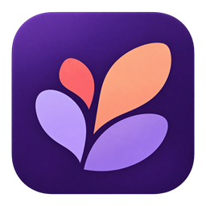

Conte o que tem em mente
Converse sobre o que você quer criar e para quem. Seu conhecimento do problema importa.

Forge Em desenvolvimentoSUAS IDEIAS, COM COMPANHIA
Traga uma ideia ou continue seu projeto. Você conhece o que precisa; seu agente ajuda a encontrar o caminho.
UMA CONVERSA, MUITAS POSSIBILIDADES
Seu agente pode alterar arquivos. Ao reconectar, você começa outra conversa nesta versão.
Nenhum agente conectado. Confira um projeto para começar.
Depois de conectar, conte o que você quer melhorar.
Uma dúvida também é um bom começo.
Converse sobre o que você quer criar e para quem. Seu conhecimento do problema importa.
Seu agente ajuda a pesquisar e planejar. O Forge mantém por perto o que vocês combinaram.
Peça mudanças e decida os próximos passos. Uma resposta do agente não significa que o trabalho terminou.